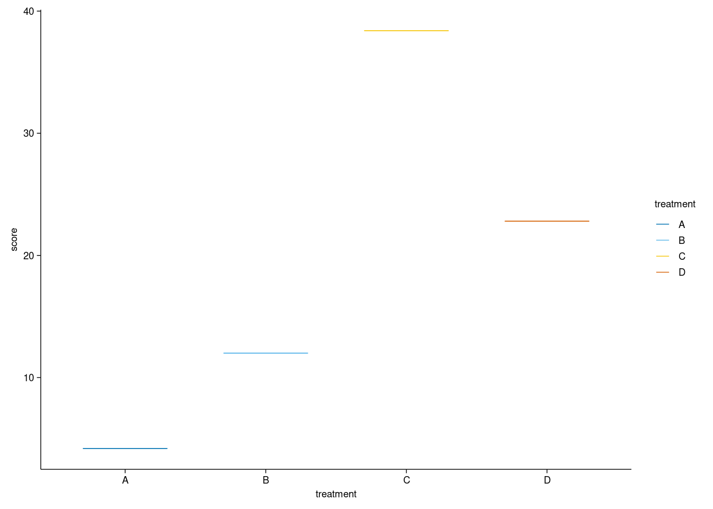
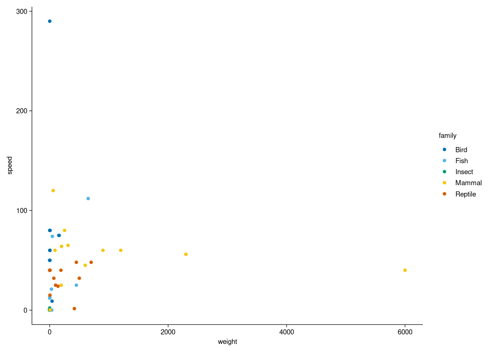
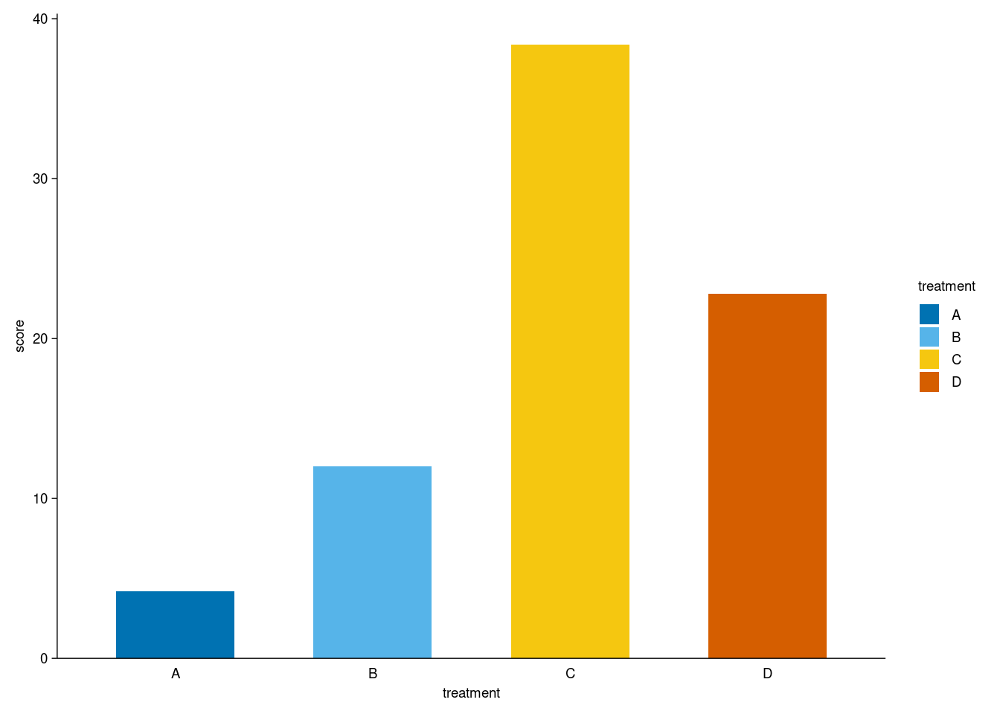
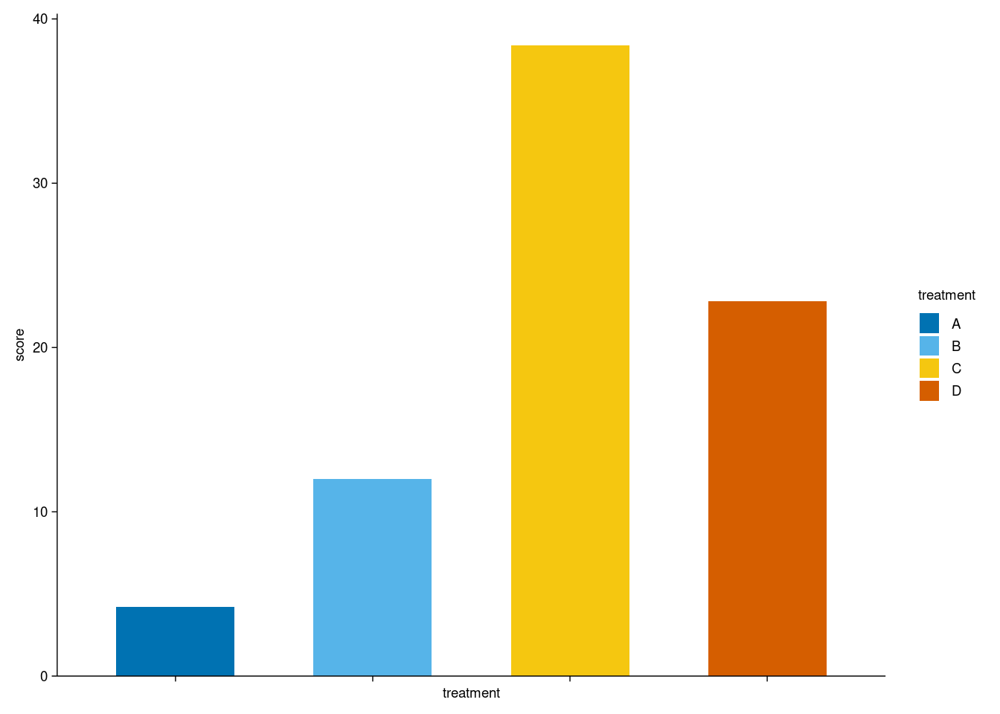
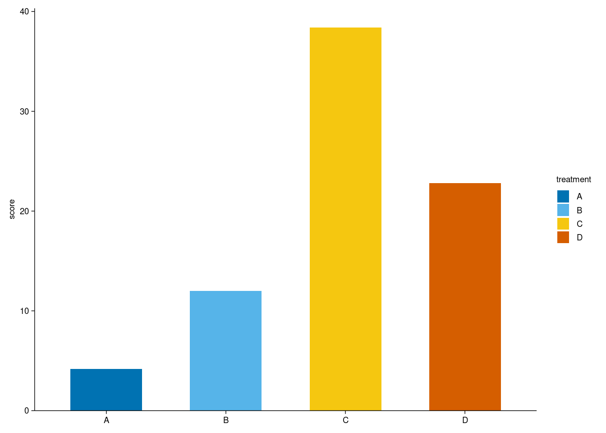
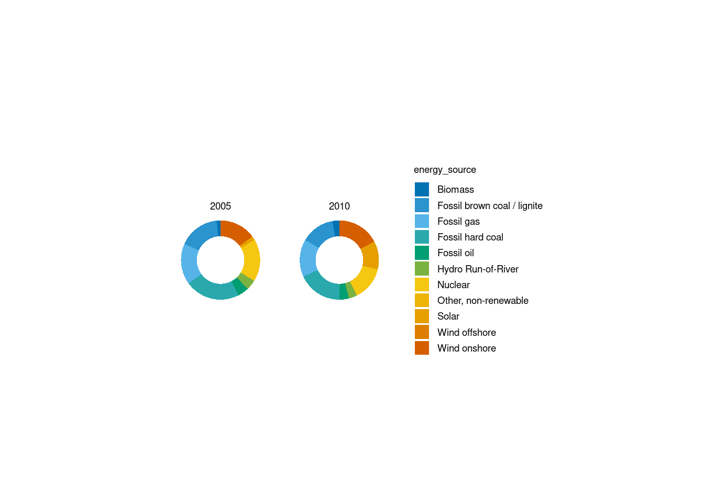
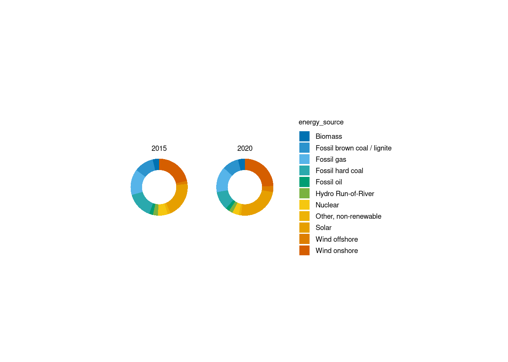

install.packages('tidyplots')
library(tidyplots)1. Introduction : What is tidyplots?
tidyplots?
tidyplots는 ggplot2과 비슷하게 R에서 데이터를 이용하여 그래프를 그릴 수 있게 해 주는 라이브러리이다. tidyplots는 Rstudio에서 다음과 같이 설치 후 실행할 수 있다.
library(tidyplots)
library(DT)
library(magrittr)
library(ggplot2)ggplot2와의 차이점?
tidyplots와 ggplot2는 그래프를 그릴 수 있다는 점은 동일하고 실제로 tidyplots object는 ggplot object와 동일하게 다른 작업이 모두 가능하다. 하지만 코드를 작성함에 있어서 차이점이 있다. study dataset의 treatment, score 컬럼으로 그래프를 그리는 코드를 통해 비교해 보자.
- 데이터 확인
dt <- study
head(dt)# A tibble: 6 × 7
treatment group dose participant age sex score
<chr> <chr> <chr> <chr> <dbl> <chr> <dbl>
1 A placebo high p01 23 female 2
2 A placebo high p02 45 male 4
3 A placebo high p03 32 female 5
4 A placebo high p04 37 male 4
5 A placebo high p05 24 female 6
6 B placebo low p06 23 female 9- ggplot2로 작성한 코드
ggplot(dt, aes(x = treatment, y = score)) +
geom_boxplot() +
geom_jitter(width = 0.2, color = "blue", alpha = 0.5) +
labs(title = "Treatment vs Score",
x = "Treatment",
y = "Score") +
theme_minimal()
- tidyplots로 작성한 코드
dt %>%
tidyplot(x = treatment, y = score) %>%
add_data_points_jitter() %>%
adjust_title("Treatment vs Score") %>%
adjust_x_axis_title("Treatment") %>%
adjust_y_axis_title("Score") %>%
add_boxplot(alpha = 0) %>%
adjust_size(width = NA, height = NA)
코드로 확인할 수 있듯이 “+” 기호로 코드를 잇는 ggplot2와는 다르게, tidyplots는 공통적으로 ’tidyplot’이라는 코드로 그래프를 선언한 다음, 그 뒤에 파이프 연산자 %>%를 이어서 그래프를 구체화시킬 수 있다. 각각의 함수의 이름에 기능이 직관적으로 잘 드러나 있기에 쉽게 그래프 코드를 작성할 수 있다.
2. Tidyplots : basics
1. Plotting
tidyplots는 기본적으로 항상 데이터와 함께 tidyplot()으로 그래프를 선언한 후 코드를 작성해야 한다. 아래의 예시는 모두 같은 결과를 수행한다. 예시에는 tidyplots 패키지에서 기본으로 제공하는 study dataset을 이용하였다.
# example 1
plot1 <- tidyplot(study, x = treatment, y = score)
# example 2
plot2 <- study %>%
tidyplot(x = treatment, y = score)2. Method : Add
tidyplots에서 그래프를 구체화하는 작업은 이후 %>% 연산자를 이용하여 연결한다. tidyplots의 대부분의 함수는 add, adjust, remove로 구분할 수 있으며, 이 섹션에서는 그래프의 요소를 더하는 add 에 해당하는 대표적인 기능에 대해 알아본다.
add_data_points
각각의 데이터들을 그래프 상에 표시하고 싶다면 add_data_points()를 사용하면 된다. 목적에 따라 add_data_points_jitter(), add_data_points_beeswarm() 옵션도 지원한다.
study %>%
tidyplot(x = treatment, y = score, color = treatment) %>%
add_data_points() %>%
adjust_size(width = NA, height = NA)
study %>%
tidyplot(x = treatment, y = score, color = treatment) %>%
add_data_points_jitter() %>%
adjust_size(width = NA, height = NA)
study %>%
tidyplot(x = treatment, y = score, color = treatment) %>%
add_data_points_beeswarm() %>%
adjust_size(width = NA, height = NA)
이외에도 함수 내부에서 다양한 argument를 조정하여 커스터마이징할 수 있다.
add_count, add_sum, add_mean, add_median
tidyplots에서는 그래프를 그리고 난 이후 다양한 지표요소를 그래프에 추가할 수 있는 기능을 제공한다. 종류는 mean, median, sum, count가 있고, value를 통해 직접 값을 표시할 수도 있고 bar, dash, line, area 등 다양한 형식으로 표현할 수 있다. 가령 데이터의 평균값을 bar의 형태로 표시하고 싶다면 add_mean_bar() 함수를 쓰면 된다. 예시를 통해 알아보자.
study %>%
tidyplot(x = treatment, y = score, color = treatment) %>%
add_mean_bar() %>%
adjust_size(width = NA, height = NA)
study %>%
tidyplot(x = treatment, y = score, color = treatment) %>%
add_mean_dash() %>%
adjust_size(width = NA, height = NA)
study %>%
tidyplot(x = treatment, y = score, color = treatment) %>%
add_mean_dot() %>%
adjust_size(width = NA, height = NA)
study %>%
tidyplot(x = treatment, y = score, color = treatment) %>%
add_mean_value() %>%
adjust_size(width = NA, height = NA)
study %>%
tidyplot(x = treatment, y = score) %>%
add_mean_line() %>%
adjust_size(width = NA, height = NA)
study %>%
tidyplot(x = treatment, y = score) %>%
add_mean_area() %>%
adjust_size(width = NA, height = NA)
study %>%
tidyplot(x = treatment, y = score) %>%
add_mean_bar(alpha = 0.4) %>%
add_mean_dash() %>%
add_mean_dot() %>%
add_mean_value() %>%
add_mean_line() %>%
adjust_size(width = NA, height = NA)
기타
이외에도 add_test_pvalue()를 통해 "wilcox_test", "t_test", "sign_test", "dunn_test", "emmeans_test", "tukey_hsd", "games_howell_test"등의 통계 검정 결과를 추가하거나 add_data_labels(), add_title() 등으로 차트 요소를 추가할 수 있다.
3. Method : Adjust
이 섹션에서는 그래프의 요소를 수정하는 adjust 에 해당하는 대표적인 기능에 대해 알아본다.
1. adjust_title, adjust_axis_title, adjust_caption
그래프에서 제목이나, 축 제목을 수정해야 할 때 위의 함수들을 이용할 수 있다. 아래와 같은 방식으로 그래프의 요소를 추가한 후, 바로 파이프를 이어서 수정하고자 하는 제목, 축에 대해 값을 입력하면 된다.
study %>%
tidyplot(x = treatment, y = score, color = treatment) %>%
add_data_points() %>%
add_mean_bar(alpha = 0.4) %>%
add_sem_errorbar() %>%
adjust_title("This is my fantastic plot title") %>%
adjust_x_axis_title("Treatment group") %>%
adjust_y_axis_title("Disease score") %>%
adjust_legend_title("Legend title") %>%
adjust_caption("Here goes the caption") %>%
adjust_size(width = NA, height = NA)
2. adjust_padding, adjust_axis
그래프에서 여백을 조정해야 할 때, adjust_padding()함수를 사용하면 도움이 된다. 또한 adjust_axis()를 사용하면 각각의 축에 대하여 세세한 수정이 가능하며, parameter와 사용 예시는 아래에 첨부한다.
adjust_x_axis(
plot,
title = ggplot2::waiver(),
breaks = ggplot2::waiver(),
labels = ggplot2::waiver(),
limits = NULL,
padding = c(NA, NA),
rotate_labels = FALSE,
transform = "identity",
cut_short_scale = FALSE,
force_continuous = FALSE,
...
)
# y axis도 동일한 argument를 가짐breaks, labels, limits는 ggplot2와 동일한 방식으로 수정할 수 있다. transform의 경우 필요하다면 log, date, exp 등 여러 가지 옵션으로 수정할 수 있다.
# Axes limits
animals %>%
tidyplot(x = weight, y = size, color = family) %>%
add_data_points() %>%
adjust_x_axis(limits = c(-1000, 4000)) %>%
adjust_y_axis(limits = c(-200, 600)) %>%
adjust_size(width = NA, height = NA)
# Rotate labels
animals %>%
tidyplot(x = weight, y = size, color = family) %>%
add_data_points() %>%
adjust_x_axis(rotate_labels = 90) %>%
adjust_y_axis(rotate_labels = 90) %>%
adjust_size(width = NA, height = NA)
# Increase plot area padding
animals %>%
tidyplot(x = weight, y = size, color = family) %>%
add_data_points() %>%
adjust_x_axis(padding = c(0.2, 0.2)) %>%
adjust_y_axis(padding = c(0.2, 0.2)) %>%
adjust_size(width = NA, height = NA)
# Scale transformation
animals %>%
tidyplot(x = weight, y = size, color = family) %>%
add_data_points() %>%
adjust_x_axis(transform = "log10") %>%
adjust_y_axis(transform = "log2") %>%
adjust_size(width = NA, height = NA)
4. Method : Remove
이 섹션에서는 그래프의 요소를 수정하는 remove에 해당하는 대표적인 기능에 대해 알아본다.
1. remove_padding
그래프를 그리다 보면 x축, y축 여백이 필요하지 않은 경우가 있는데, 이 경우 remove_padding()을 넣으면 바로 해결할 수 있다.
# Before removing
animals %>%
tidyplot(x = weight, y = speed, color = family) %>%
add_data_points() %>%
adjust_size(width = NA, height = NA)
# After removing
animals %>%
tidyplot(x = weight, y = speed, color = family) %>%
add_data_points() %>%
remove_padding() %>%
adjust_size(width = NA, height = NA)
2. remove_title, remove_caption, remove_axis_
제목, 캡션, 범례 뿐만 아니라 축과 관련된 요소 또한 선택적으로 제거할 수 있다.
# Before removing
study %>%
tidyplot(x = treatment, y = score, color = treatment) %>%
add_mean_bar() %>%
adjust_size(width = NA, height = NA)
# After removing
study %>%
tidyplot(x = treatment, y = score, color = treatment) %>%
add_mean_bar() %>%
remove_x_axis_line() %>%
adjust_size(width = NA, height = NA)
study %>%
tidyplot(x = treatment, y = score, color = treatment) %>%
add_mean_bar() %>%
remove_x_axis_ticks() %>%
adjust_size(width = NA, height = NA)
study %>%
tidyplot(x = treatment, y = score, color = treatment) %>%
add_mean_bar() %>%
remove_x_axis_labels() %>%
adjust_size(width = NA, height = NA)
study %>%
tidyplot(x = treatment, y = score, color = treatment) %>%
add_mean_bar() %>%
remove_x_axis_title() %>%
adjust_size(width = NA, height = NA)
study %>%
tidyplot(x = treatment, y = score, color = treatment) %>%
add_mean_bar() %>%
remove_x_axis() %>%
adjust_size(width = NA, height = NA)
3. Tidyplots : applications
이 섹션에서는 tidyplots에서 제공하는 특별한 기능 또는 다른 라이브러리와의 호환에 대한 내용을 소개한다.
1. ggplot to tidyplot, add
ggplot2 라이브러리에서는 그래프의 세부 요소를 매우 다양하게 조정할 수 있는데, as_tidyplot()을 통해 미리 만들어 놓은 ggplot object를 tidyplots object로 변환하여 tidyplots 문법으로 나머지 작업을 시행할 수 있다.
gg <- ggplot(study, aes(x = treatment, y = score, color = treatment)) +
geom_point()
gg
gg %>% as_tidyplot() %>%
remove_legend() %>%
adjust_size(width = NA, height = NA)
또한 tidyplot 코드 내부에서 ggplot2의 기능을 사용하고 싶을때는 add::ggplot2()함수를 사용하여 파이프로 연결하여 적용할 수 있다.
study %>%
tidyplot(x = treatment, y = score, color = treatment) %>%
add(ggplot2::geom_point()) %>%
adjust_size(width = NA, height = NA)
2. split
tidyplots에서 제공하는 기능 중 하나는 그래프를 그린 후. 특정 컬럼을 기준으로 그룹핑 후 그래프를 분리할 수 있는 기능이다. 이는 split_plot()으로 시행 가능하다. argument는 다음과 같다.
split_plot(
plot,
by,
ncol = NULL,
nrow = NULL,
byrow = NULL,
widths = 30,
heights = 25,
guides = "collect",
tag_level = NULL,
design = NULL,
unit = "mm"
)특정 컬럼을 지정하면 그 컬럼을 기준으로 그래프가 분리되며, nrow, ncol을 지정하면 페이지가 분리가 된다. 주의할 점은 split_plot()은 코드의 맨 뒤에 위치해야 한다는 점이다.
# Before splitting
energy %>%
dplyr::filter(year %in% c(2005, 2010, 2015, 2020)) %>%
tidyplot(y = power, color = energy_source) %>%
add_donut() %>%
adjust_size(width = NA, height = NA)
# Split by year
energy %>%
dplyr::filter(year %in% c(2005, 2010, 2015, 2020)) %>%
tidyplot(y = power, color = energy_source) %>%
add_donut() %>%
adjust_size(width = NA, height = NA) %>%
split_plot(by = year)✔ split_plot: split into 4 plots across 1 page
# Spread plots across multiple pages
energy %>%
dplyr::filter(year %in% c(2005, 2010, 2015, 2020)) %>%
tidyplot(y = power, color = energy_source) %>%
add_donut() %>%
adjust_size(width = NA, height = NA) %>%
split_plot(by = year, ncol = 2, nrow = 1) ✔ split_plot: split into 4 plots across 2 pages[[1]]
[[2]]
3. vector graphics
tidyplots object도 ggplot2 object와. rvg 패키지로 동일하게 그래프를 벡터 그래픽으로 변환 후 officer 패키지와 연계하여 수정 가능한 pptx 파일로 저장할 수 있다. 그 예시를 소개한다.
library(officer)
library(rvg)
plot3 <- energy %>%
dplyr::filter(year %in% c(2005, 2010, 2015, 2020)) %>%
tidyplot(y = power, color = energy_source) %>%
add_donut() %>%
adjust_size(width = NA, height = NA) %>%
split_plot(by = year)
ppt <- read_pptx() %>%
add_slide(layout = "Title and Content", master = "Office Theme") %>%
ph_with(dml(ggobj = plot3), location = ph_location_type(type = "body")) %>%
print(target = "plot.pptx")Summary
tidyplots library는 ggplot2와 비교하여 더 직관적인 가독성이 높은 코드 작성이 가능하고, 특정 작업에 있어서 빠르고 간편하게 그래프를 그릴 수 있다. 포스트에서 소개한 기능 외에도 다양한 기능을 https://jbengler.github.io/tidyplots/index.html에서 확인할 수 있다.
차라투 블로그 차라투 블로그 Home /index.html Applications https://openstat.ai/ R packages jstable https://jinseob2kim.github.io/jstable/ jskm https://jinseob2kim.github.io/jskm/ jsmodule https://jinseob2kim.github.io/jsmodule/ Contributors /contributors.html Partners R-bloggers https://www.r-bloggers.com/

Powered by Quarto.
© 2019. Zarathu Co.,Ltd. All rights reserved. Licence: MIT.
tidyplots: 간편한 그래프 작성 라이브러리 – 차라투 블로그 tidyplots: 간편한 그래프 작성 라이브러리 – 차라투 블로그 tidyplots: 간편한 그래프 작성 라이브러리 – 차라투 블로그 차라투 블로그 tidyplots 패키지를 이용하여 주어진 데이터로 빠르게 그래프를 그려보자 tidyplots 패키지를 이용하여 주어진 데이터로 빠르게 그래프를 그려보자